Interface utilisateur graphique¶
L’interface de ProjeQtOr est divisée en plusieurs zones.
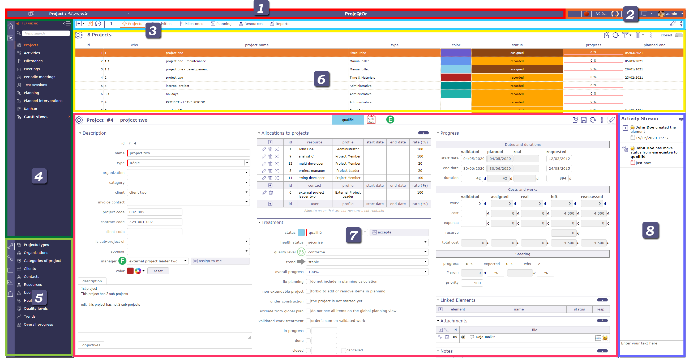
Écran de vue d’ensemble de l’interface utilisateur graphique¶
Les séparateurs permettent de redimensionner les zones de l’interface. Leur position est sauvegardée et restaurée à chaque connexion.
{kind=link}
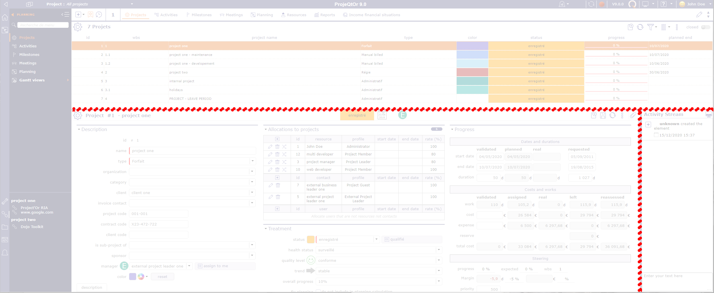
Barre supérieure¶
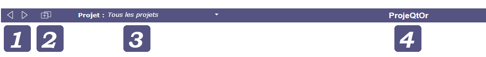
{kind=link}
{kind=link}
Bouton Nouvel onglet¶
Le bouton onglet  permet d’ouvrir un nouvel onglet dans la même session.
permet d’ouvrir un nouvel onglet dans la même session.
Les onglets de votre navigateur reconnaissent votre session ProjeQtOr.
Vous pouvez ouvrir un nouvel onglet sans interrompre ni perturber le processus en cours.
Un nouvel onglet reste dans la même session que l’onglet d’origine et sera complètement indépendant des autres.
Vous pouvez ainsi avoir un projet différent sélectionné dans le sélecteur sur chaque onglet, appliquer des filtres différents, tout en restant dans la même session.
Raccourci clavier¶
Ctrl + S Enregistrer
Ctrl + A Sélectionner tout dans un champ de texte
Ctrl + ; Afficher la fenêtre des émoticônes
Ctrl + clic Accès direct à l’élément lié « dans un nouvel onglet »
Shift + clic Accès direct à l’élément lié « dans une nouvelle fenêtre »
F1 Ouvre ce manuel
echap Quitte le mode édition en ligne sur la vue de planification
Enter Confirme la modification de la ligne sur la vue de planification
Double-clic Sur l’ID => copie l’ID sur la vue de planification
Double-clic sur Prédécesseurs => colle l’ID copié sur la vue de planification
Sélecteur de projet¶

Sélecteur de projet¶
Le sélecteur vous permet de choisir le projet sur lequel travailler en limitant la visibilité de tous les écrans aux éléments du projet sélectionné, y compris les sous-projets le cas échéant.
Lorsque vous créez un nouvel élément, le champ projet est automatiquement renseigné.
Différents boutons apparaissent sous le champ de recherche selon vos actions.
Lorsque vous sélectionnez un ou plusieurs projets, cliquez sur « Valider la sélection de projet ».
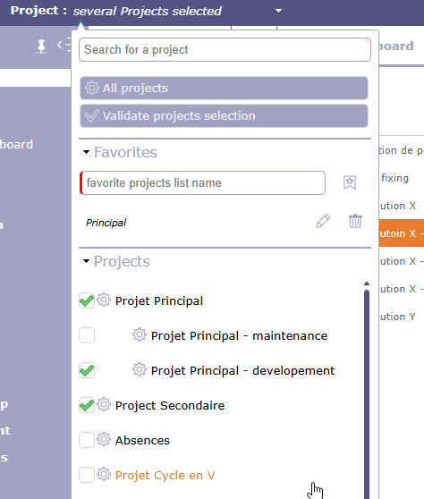
Sélecteur de projet¶
Note
Dans les Paramètres utilisateur, le projet par défaut définit le projet qui sera sélectionné et affiché par défaut dans le sélecteur de projet.
Voir aussi
Paramètres du sélecteur de projet¶
Cliquez sur  pour afficher la boîte de dialogue des paramètres du sélecteur de projet.
pour afficher la boîte de dialogue des paramètres du sélecteur de projet.
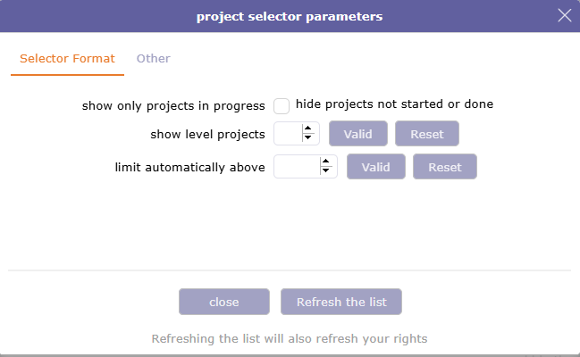
Boîte de dialogue - Paramètres du sélecteur de projet¶
2 onglets vous permettent d’ajuster certains aspects du sélecteur : Format du sélecteur et Autre.
Dans le format du sélecteur, une option permet de n’afficher que les projets dont le macro-état est En cours.
Vous choisissez le nombre de sous-projets affichés dans le sélecteur de projet. Le nombre par défaut est de 2 niveaux.
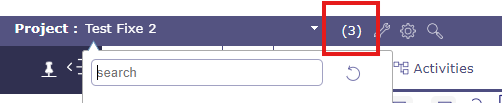
Sélecteur de projet avec affichage par niveaux¶
Un champ de recherche intégré à la liste vous permet d’effectuer rapidement une recherche parmi tous vos projets.
La liste des projets et sous-projets est affichée selon la structure WBS.
Vous pouvez choisir d’afficher plusieurs projets en cochant les cases correspondantes.
L’autocomplétion est active
limiter automatiquement au-delà de…
Le paramètre « limite maximale » vous permet de restreindre le nombre de projets affichés dans la liste.
Selon le seuil sélectionné, ProjeQtOr limite l’affichage des sous-projets — en les masquant si nécessaire — et ajuste également la mise en page de la liste, qui peut être affichée sans refléter la WBS et avec un espacement des lignes plus resserré.
Sélecteur de l’élément courant
Lorsque vous consultez un écran de projet ou l’un de ses éléments, cliquez sur  pour sélectionner le projet concerné dans le sélecteur de projet.
pour sélectionner le projet concerné dans le sélecteur de projet.
Double-cliquez pour afficher à nouveau tous les projets, afin de sélectionner le projet courant dans le sélecteur de projet.
Recherche dans le sélecteur de projet
Cliquez sur  pour rechercher des projets et sous-projets depuis n’importe quel écran avec les mêmes fonctions de recherche que sur l’écran des projets
pour rechercher des projets et sous-projets depuis n’importe quel écran avec les mêmes fonctions de recherche que sur l’écran des projets

Fenêtre de recherche du sélecteur de projet¶
Actualiser la liste
Cliquez sur le bouton d’actualisation de la liste pour mettre à jour immédiatement la liste des projets affichés.
La création d’un nouveau projet peut ne pas s’afficher immédiatement dans l’interface de vos collaborateurs, le délai d’affichage dépend de votre connexion.
Certains paramètres de l’application peuvent être actualisés à l’aide de ce bouton sans avoir à déconnecter/reconnecter votre compte.
Projets favoris¶
Vous pouvez créer plusieurs listes de projets favoris dans le sélecteur de projet.
Sélectionnez un ou plusieurs projets dans la liste des projets du sélecteur. Lorsque au moins une case est cochée, la section favoris affiche un champ vous permettant de sauvegarder cette sélection.
Créer une liste - Menu déroulant¶
Cochez les cases des projets que vous souhaitez ajouter à vos favoris.
Cliquez sur
 pour enregistrer votre liste
pour enregistrer votre listeVotre liste est affichée
Cliquez sur
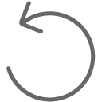
pour effacer les dernières sélections et le nom saisi
{kind=link}
{kind=link}
Astuce
Lorsque vous sélectionnez un sous-projet comme favori, vous voyez automatiquement son projet parent, même s’il n’a pas été sélectionné.
Dans le favori 1, le parent est sélectionné. Les sous-projets sont affichés.
Dans le favori 3, l’un des sous-projets est sélectionné. Le parent est affiché.
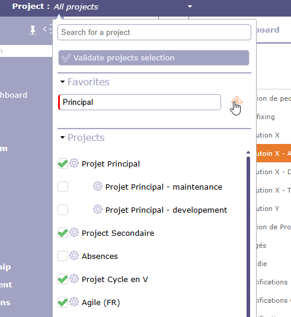
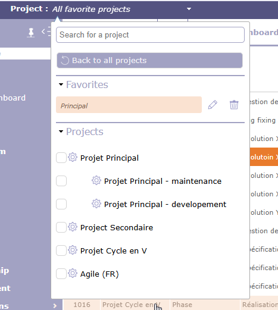
Cliquez sur
 pour modifier vos favoris.
pour modifier vos favoris.La liste de tous les projets s’affiche à nouveau et les projets de la liste à modifier apparaissent en couleur secondaire.
Vous pouvez ajouter des projets en cochant les cases
Cliquez sur
pour enregistrer la liste mise à jour.Cliquez sur le bouton « Tous les projets » pour revenir à la liste principale des projets. Les favoris restent enregistrés mais ne sont pas sélectionnés.
Voir aussi
Il est possible de créer une liste de projets favoris à partir des filtres.
Autre¶
L’option Mode Archive permet d’afficher les éléments clôturés.
Lorsque le mode Archive est actif, l’icône s’affiche dans la barre supérieure. Cliquez dessus pour arrêter le processus.
{kind=link}
Le mode Archive vous permet de voir les projets clôturés dans le sélecteur de projet.
Pour afficher les projets clôturés dans la zone de liste de l’écran des projets, activez le bouton « clôturé ».
Seul l’administrateur peut voir ce bouton en permanence.

Lorsque le mode Archive est actif, les listes de projets dans les paramètres des Rapports affichent les projets clôturés.
Nom de l’instance¶
Vous pouvez renommer le nom de l’instance ProjeQtOr via les paramètres globaux dans l’onglet Affichage.
Voir aussi
Barre d’informations¶
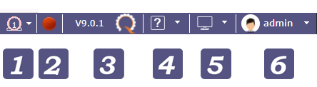
Bouton CRON¶
Le bouton d’activation du CRON vous permet de voir rapidement si votre CRON est lancé ou non.
Le bouton n’est visible que pour le Profil Administrateur.
le CRON est en cours d’exécution
 Demande d’arrêt en cours. La prochaine actualisation le passe au rouge.
Demande d’arrêt en cours. La prochaine actualisation le passe au rouge.
le CRON est arrêté
Cliquez sur le bouton pour démarrer ou arrêter le CRON de la même manière que sur la page d’Administration.
Voir aussi
Mise en page de l’écran¶
La mise en page des écrans vous permet de choisir comment vous souhaitez afficher l’interface de ProjeQtOr
La disposition non choisie apparaît en gris
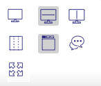
Mise en page de l’écran¶
De nombreux modes sont disponibles !
 mode alterné
mode alterné
Permet d’activer ou de désactiver le mode alterné qui permet de basculer entre les fenêtres liste et détail. La fenêtre sélectionnée s’affiche en mode « plein écran ».
Les fenêtres masquées sont remplacées par une barre grise. Cliquez sur la barre grise pour basculer entre les fenêtres.
Mise en page horizontale - mise en page verticale
{kind=link}
{kind=link}
Vous disposez de tous les écrans de l’application en mode horizontal ou vertical.
Vous pouvez organiser vos écrans de manière unique en utilisant l’icône d’affichage dans la zone de liste
Le mode horizontal affiche la zone de liste en haut de l’écran et la zone de détail en bas.
Le mode vertical affiche la zone de liste à gauche de l’écran et la zone de détail à droite.
 Mode Liste
Mode Liste
Le mode colonnes correspond à la présentation historique de ProjeQtOr, où les différentes parties composant la zone de détail sont affichées en une, deux ou trois colonnes
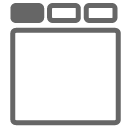
{kind=link}
Les sections présentes dans les colonnes sont réparties sous des onglets avec le mode onglets.
Afficher/Masquer le flux d’Activité
{kind=link}
Affiche ou masque globalement (sur tous les écrans) la zone de notes pour chaque élément.
Pour afficher les notes uniquement sur un écran spécifique, choisissez dans la barre d’outils de la zone de détail.
Voir aussi
 Mode plein écran
Mode plein écran
Avec ce mode, votre navigateur devient invisible, les menus, la barre de navigation, les boutons… sont masqués. Vous pouvez profiter de votre instance ProjeQtOr en mode plein écran.
Menu personnalisé¶
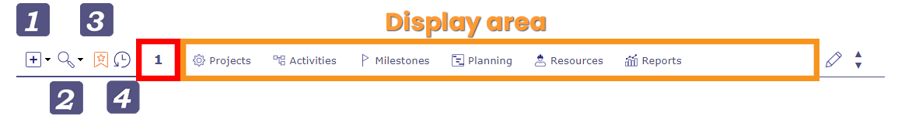
Barre de signets¶
Nouvel élément¶
Ce bouton vous permet de créer rapidement un nouvel élément depuis n’importe quel écran.
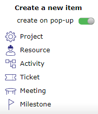
Créer un nouvel élément¶
Vous pouvez créer :
un projet
une Ressource
une Activité
un Ticket
une réunion
un Jalon
Le bouton bascule « créer en pop-up » vous permet de définir comment initier la création.
Si le bouton est activé, une fenêtre contextuelle s’ouvre par-dessus l’écran courant sur l’écran de l’élément que vous souhaitez créer.
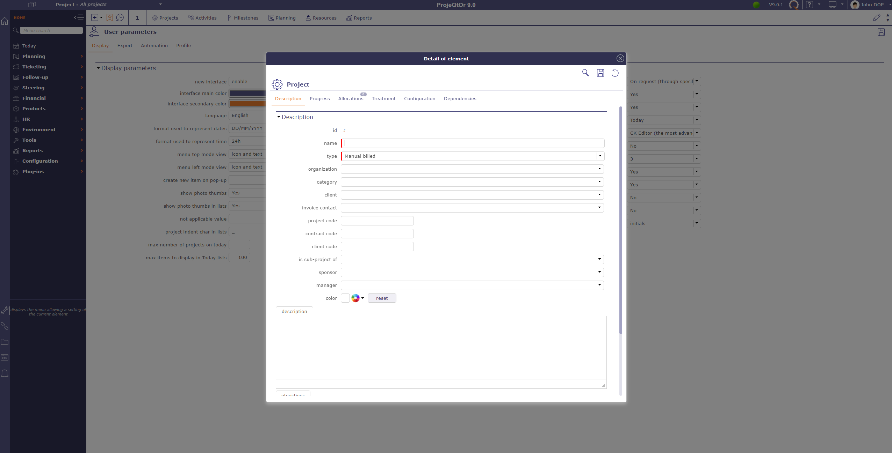
Créer un nouvel élément¶
Si le bouton est désactivé, vous accédez directement à l’écran de l’élément que vous souhaitez créer.
Recherche globale¶
Lorsqu’elle est utilisée, l’affichage ouvre la liste globale et effectue une « recherche rapide » (recherche textuelle) sur tous les éléments de ProjeQtOr.
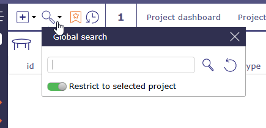
Recherche globale¶
Signets¶
Vous pouvez marquer certains écrans et les organiser dans les barres de favoris pour créer un menu personnalisé.
Vous pouvez créer jusqu’à 5 barres de favoris.
Cliquez sur pour afficher dans la zone d’affichage la liste des écrans des éléments que vous avez mis en favoris.

Afficher les signets¶
Un clic droit sur la zone d’affichage vous permet d’afficher et d’organiser les 5 barres de favoris et de choisir comment les afficher.
Vous avez 3 façons de visualiser vos favoris :
 Texte signets : Vous visualisez les signets en mode texte uniquement
Texte signets : Vous visualisez les signets en mode texte uniquement
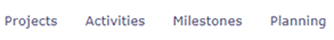
Favoris¶
 Icône signets : Vous affichez les signets en mode icône uniquement
Icône signets : Vous affichez les signets en mode icône uniquement

Favoris¶
{kind=link}
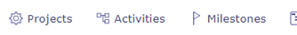
Image favoris¶
Le numéro affiché correspond au numéro de la barre de favoris sur laquelle vous vous trouvez.
Pour changer de barre de signets, vous pouvez utiliser plusieurs méthodes pour afficher une barre particulière :
La molette de votre souris lorsque vous êtes positionné sur la barre.
Cliquez sur les flèches de navigation haut et bas à l’extrémité droite de la barre.
Cliquez sur le numéro de la barre pour afficher toutes les barres et sélectionnez celle souhaitée en cliquant sur le numéro correspondant.
Vous pouvez afficher une barre vide.
Ajouter, organiser et supprimer des signets
Pour ajouter un signet, cliquez sur l’étoile à droite de chaque écran de menu

L’étoile est remplie avec la couleur secondaire de votre interface une fois ajoutée à la barre de favoris

Pour organiser vos favoris, faites un clic droit sur la barre ou cliquez sur pour afficher vos 5 barres, puis cliquez et faites glisser les écrans vers les barres souhaitées.
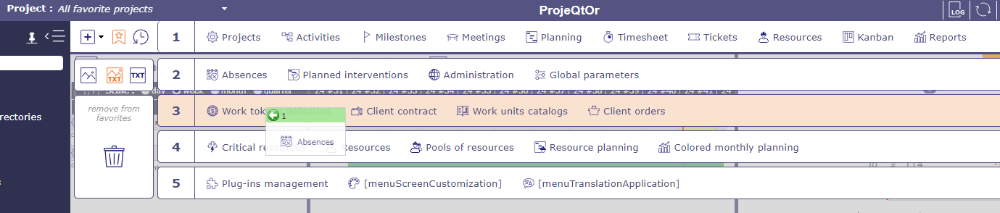
Une barre verte vous indique que vous pouvez déposer les favoris depuis votre écran, une barre rouge vous indique que c’est impossible.
Pour supprimer un signet, faites un clic droit sur le signet et cliquez sur le bouton Supprimer de la barre de menu personnalisé

Vous pouvez placer le même signet sur plusieurs barres. Clic Ctrl sur le favori et faites-le glisser vers une autre barre.
Le favori sera dupliqué.
Barre des récents¶
La barre des écrans récents vous permet de conserver en mémoire les écrans que vous avez parcourus depuis la connexion. Elle fonctionne comme une sorte d’historique limité.
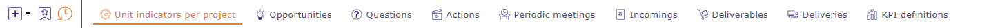
Barre des récents¶
En effet, le nombre d’écrans récents dépend de la résolution de votre écran. Par exemple : entre 12 et 16 écrans affichés pour un écran 2K et entre 6 et 10 pour un écran HD.
Menu¶

Menu¶
Indication de section¶
Lors de la navigation, chaque fois que vous sélectionnez une section ou une sous-section, l’icône correspondante s’affiche dans cette zone.
{kind=link}
{kind=link}
{kind=link}
{kind=link}
Menu secondaire¶
Le menu secondaire peut être vu comme le côté droit du menu.
Il vous permet d’afficher de nombreuses informations sur votre projet, votre navigation ou votre organisation.
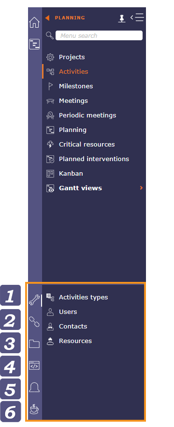
Menu¶
Paramètres¶
Les paramètres affichés dans le menu secondaire sont liés à l’écran sélectionné.
Dans l’exemple ci-dessus, l’utilisateur a sélectionné l’écran Activité. On voit alors que les paramètres sont en corrélation directe avec les activités.
Si l’utilisateur sélectionne l’écran projet, les paramètres seront adaptés en conséquence.
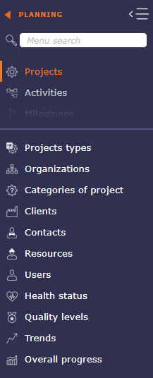
Liens¶
Afficher des hyperliens vers des pages web distantes.
Ces liens sont définis comme des pièces jointes hyperlien sur les projets.
Les liens affichés ici dépendent du projet sélectionné.

Répertoire et Documents¶
Les répertoires de documents donnent un accès direct aux documents contenus dans le répertoire.
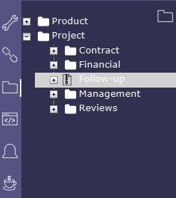
Lorsque vous cliquez sur l’icône avec le zip, une fenêtre contextuelle vous propose d’extraire le répertoire de l’application en mode archive au format .zip.
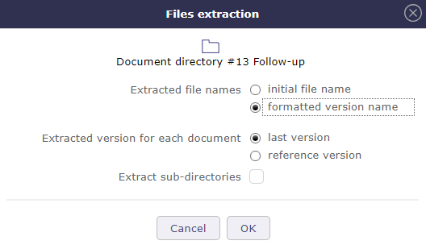
Extraction de fichiers¶
Voir aussi
Écran Répertoire de documents.
Console¶
Affiche des informations sur les actions principales : insertion, mise à jour, suppression.
L’horodatage indique quand l’action a été effectuée.
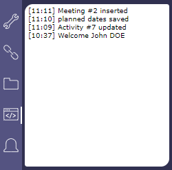
Avertissement
Les messages affichés ici ne sont pas stockés et seront effacés lors de la déconnexion de l’utilisateur.
Notifications¶
Dans le menu secondaire
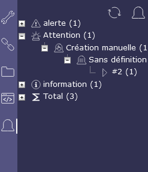
Notifications¶
Voir aussi
Notifications pour plus de détails.
Un peu de café¶
Retrouvez dans cette section des actualités concernant ProjeQtOr
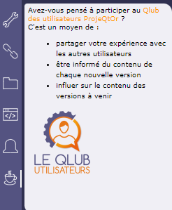
Notifications¶
Zone de liste¶
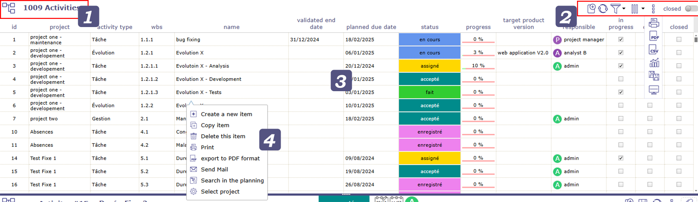
Identifiant d’élément¶
Affiche le nom de l’élément et le nombre d’éléments dans la liste.
Chaque élément est identifié par une icône distinctive.
Cliquez sur un en-tête de colonne pour trier la liste sur cette colonne (d’abord croissant, puis décroissant).
Le tri ne s’effectue pas toujours sur le nom affiché.
Si la colonne triée est liée à une liste de référence avec une valeur d’ordre de tri, le tri s’effectue sur cette valeur d’ordre.
Le tri sur le « Statut » permet de trier les valeurs telles que définies dans le workflow.
Cliquer sur une ligne (n’importe quelle colonne) affiche l’élément correspondant dans la zone de détail.
Outils¶
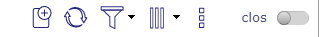
Cliquez sur
 pour créer un nouvel élément
pour créer un nouvel élémentCliquez sur
 pour actualiser la liste
pour actualiser la listeCliquez sur
 pour actualiser automatiquement la liste
pour actualiser automatiquement la listeCliquez sur
 filtres
filtresCliquez sur
 pour organiser les colonnes
pour organiser les colonnesCliquez sur
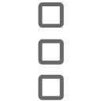
pour ouvrir le sous-menuCliquez sur
 pour imprimer la zone de liste telle qu’elle apparaît dans la fenêtre
pour imprimer la zone de liste telle qu’elle apparaît dans la fenêtreCliquez sur
 pour exporter la zone de liste en PDF
pour exporter la zone de liste en PDFCliquez sur
 pour exporter la zone de liste en CSV
pour exporter la zone de liste en CSVCliquez sur
 pour ouvrir la mise à jour multiple
pour ouvrir la mise à jour multipleCliquez sur pour afficher cet écran uniquement en vertical ou en horizontal
{kind=link}
Activez le bouton clôturé pour afficher tous les éléments En cours
Actualiser automatiquement la liste¶
Les zones de liste d’éléments peuvent s’actualiser automatiquement.
Choisissez dans le menu de connexion la fréquence d’actualisation automatique des zones de liste.
Voir aussi
Les filtres¶
La fenêtre contextuelle des filtres offre différents niveaux de filtres. Filtres simples, permanents ou non, filtres avancés avec la possibilité d’ajouter de nombreux critères.
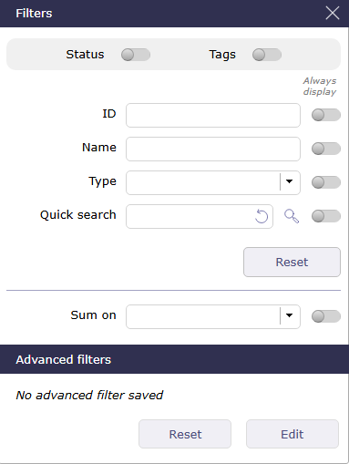
Fenêtre des filtres¶
Vous pouvez choisir de les afficher en permanence dans la barre d’outils de la zone de liste en activant le bouton bascule.
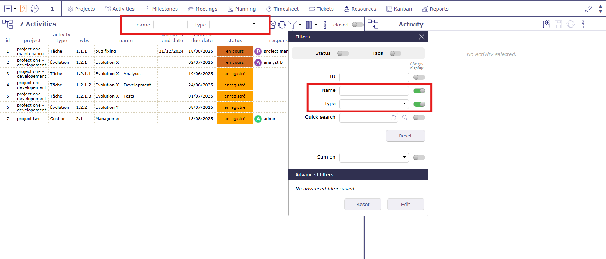
Filtres toujours visibles¶
Vous pouvez choisir de les afficher en permanence dans la barre d’outils de la zone de liste en activant le bouton bascule.
Vous pouvez restreindre l’affichage pour chacun de ces critères ou les combiner pour effectuer des tris plus complexes :
par ID
par nom
par type
La recherche textuelle¶
Le champ de recherche textuelle est très puissant. Il effectue une recherche dans presque tous les champs modifiables de l’écran sur lequel vous vous trouvez.
La fonction de recherche textuelle présente les caractéristiques suivantes :
Elle recherche dans tous les champs texte ;
Elle recherche les éléments clôturés même si l’option « Afficher les éléments clôturés » n’est pas sélectionnée ;
Elle ne prend pas en compte les autres filtres (par statut, par libellé, par nom).
Important
Les accents ne sont pas pris en compte.
Le filtre textuel ignore les autres filtres et ne s’accumule pas. Il remplace tous les autres filtres d’affichage.
Filtres de statut¶
Activez le bouton pour afficher les filtres de statut directs. L’affichage des nouveaux statuts n’est pas immédiat et nécessite l’actualisation de la page.

Filtre de statut¶
Seuls les statuts existants sont visibles s’ils sont utilisés.
Choisissez-en un et la liste d’éléments sera filtrée.
Il s’agit d’un filtre rapide par statut.
Filtres d’étiquettes¶
Activez le bouton pour afficher les filtres d’étiquettes directs. L’affichage des nouveaux statuts n’est pas immédiat et nécessite l’actualisation de la page.

Filtre d’étiquettes¶
Seuls les statuts existants sont visibles s’ils sont utilisés.
Vous avez la possibilité de restreindre la liste des étiquettes par projet.
Choisissez-en un et la liste d’éléments sera filtrée.
Il s’agit d’un filtre rapide par statut.
Somme sur¶
Avec cette fonctionnalité, vous affichez en haut de la zone de liste la somme de la catégorie que vous avez choisie dans la liste déroulante.
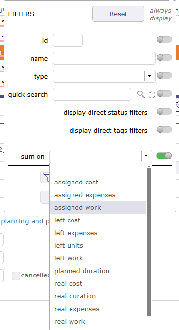
Somme sur¶
Important
Cette fonctionnalité ne prend pas en compte les activités parentes même si elles contiennent elles-mêmes de la charge.
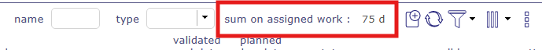
Affichage de la somme¶
Les filtres avancés¶
Cliquez sur modifier pour ouvrir la fenêtre des filtres avancés.
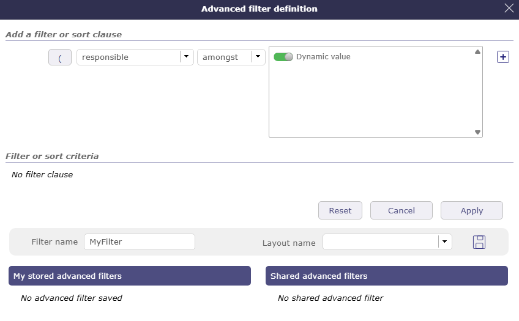
Définition des filtres avancés¶
Filtre actif¶
Définissez les clauses de filtre ou de tri dans « Ajouter une clause de filtre ou de tri ».
Sélectionnez le nom du champ, l’opérateur et la valeur pour la clause.
Vous pouvez ouvrir
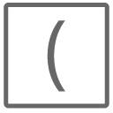
.Le bouton change si un groupe est ouvert avec
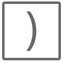
et/ou en fonction des critères.ProjeQtOr gère 3 niveaux de groupes
{kind=link}
{kind=link}
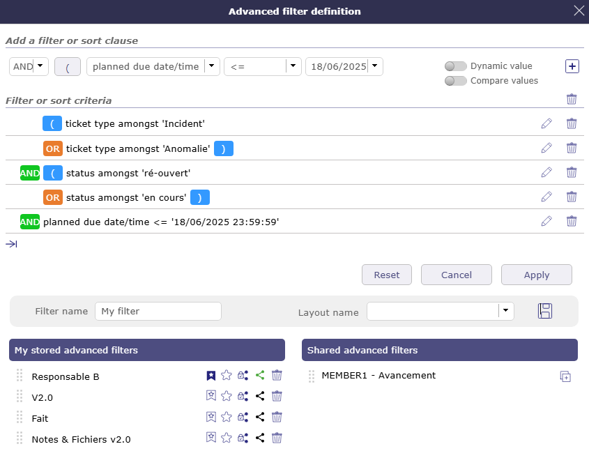
Création d’un filtre¶
Cliquez sur
 pour ajouter des critères supplémentaires.
pour ajouter des critères supplémentaires.Nommez le filtre à enregistrer.
Choisissez une mise en page particulière dans la liste des mises en page enregistrées pour appliquer le filtre. La mise en page choisie s’affichera avec le filtre appliqué directement.
Cliquez sur
pour une utilisation ultérieure.Le filtre est immédiatement stocké dans les filtres enregistrés.
Cliquez sur pour créer une liste de projets favoris à partir de la sélection de filtres (applicable uniquement aux projets).
Cliquez sur
 pour sélectionner le filtre qui sera appliqué par défaut à chaque connexion.
pour sélectionner le filtre qui sera appliqué par défaut à chaque connexion.Cliquez sur pour partager le filtre avec vos collaborateurs.
Cliquez sur
 pour supprimer le filtre.
pour supprimer le filtre.
Vous pouvez sélectionner le filtre dans la liste ou cliquer sur
appliquerpour activer le filtre.Cliquez sur
Annulerpour revenir à l’écran de l’élément.Cliquez sur
Réinitialiserpour annuler la création du filtre courant.
{kind=link}
{kind=link}
Opérateur logique¶
Possibilité de sélectionner l’opérateur logique ET et l’opérateur logique OU dans les critères.
L’opérateur logique ET est appliqué par défaut.
Le filtre direct avancé utilise les conventions SQL pour la substitution de caractères :
_ = un seul caractère
% = 0 à N caractères
Gestion des dates¶
De nombreux critères sont disponibles pour les dates en plus des symboles mathématiques standard.
Il y a < = >, mais aussi des systèmes de dates + x jours / mois / années.
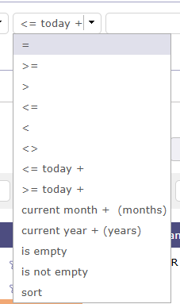
Symboles mathématiques et critères pour les dates¶
Valeur dynamique¶
Lorsque la valeur sélectionnée est dynamique, vous ne sélectionnez rien dans la liste.
La valeur sera alors saisie lors de l’appel du filtre et sera pleinement activée lorsque le filtre sera choisi.
Filtres enregistrés¶
Cette section permet de gérer les filtres enregistrés.
Cliquez sur un filtre enregistré pour récupérer sa définition.
Cliquez sur
depuis un filtre enregistré pour le supprimer.Cliquez sur
 pour réorganiser les filtres.
pour réorganiser les filtres.
Lorsque vos collaborateurs partagent des filtres, ils apparaissent en dessous de la liste des filtres enregistrés.
Cliquez sur la liste pour afficher tous les filtres et leur auteur.

Filtres partagés¶
Liste des filtres¶
La liste des filtres permet de sélectionner un filtre enregistré.
Pour voir la liste des filtres, déplacez le curseur sur l’icône de filtre avancé.
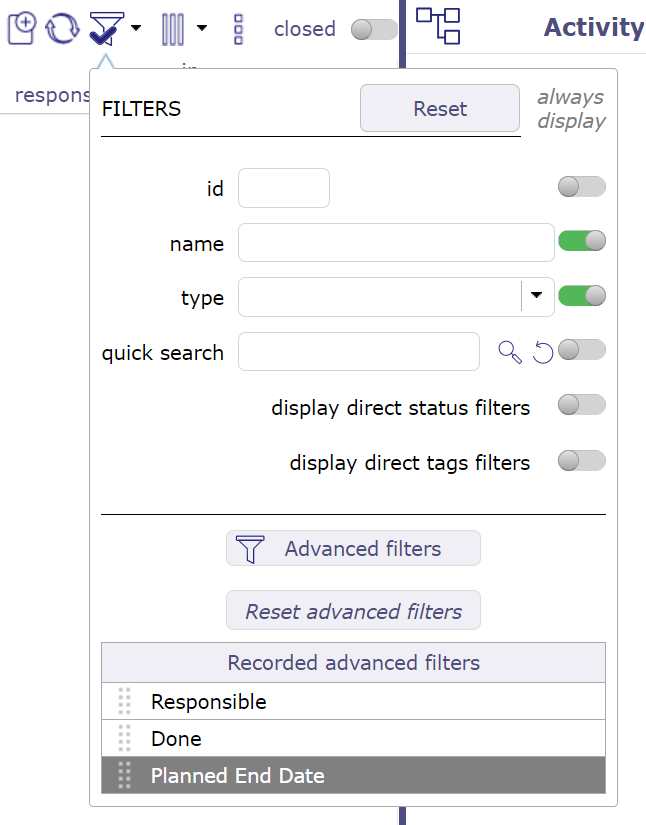
Liste des filtres¶
Cliquez sur le nom du filtre pour l’appliquer.
Cliquez sur aucune clause de filtre pour réinitialiser le filtre.
Les filtres avancés sur la planification¶
Dans la vue planning, la fenêtre de filtre vous permet de restreindre directement l’affichage sur le diagramme de Gantt et la WBS.
La fonction de recherche par nom et ID vous permet d’affiner la liste en fonction des termes saisis, et un compteur vous permet de naviguer parmi les options restantes en fonction de ce que vous avez saisi.
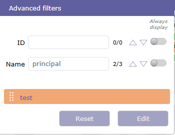
Liste des filtres¶
Note
Le filtrage porte sur plusieurs objets.
Ainsi, seuls les champs communs à tous les objets peuvent être utilisés comme filtres.
Les colonnes¶
Vous pouvez définir les colonnes à afficher dans la zone de liste pour l’élément sélectionné.
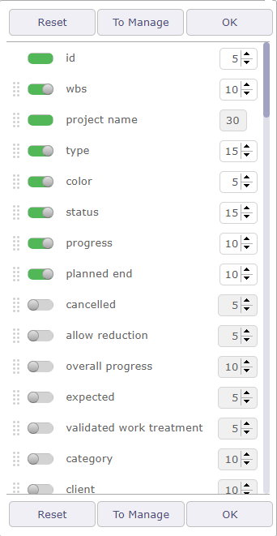
Organisateur de colonnes¶
L’identifiant et le nom de l’élément sélectionné sont des champs obligatoires. Ils ne peuvent pas être supprimés de la vue.
L’affichage des colonnes peut être défini par et pour l’utilisateur ou il peut être appliqué par défaut pour un utilisateur particulier.
Utilisez les cases à cocher pour sélectionner ou désélectionner les colonnes à afficher.
Cliquez sur le bouton OK pour appliquer les modifications.
Cliquez sur le bouton Réinitialiser pour rétablir la liste à son format par défaut.
Cliquez sur le bouton « Gérer » pour enregistrer les mises en page de colonnes.
La définition appliquée sera automatiquement restaurée à la prochaine connexion.
Dans la liste d’éléments, vous pouvez ajouter une colonne « Pièces jointes », qui affichera une icône :
si l’élément contient des fichiers joints
si l’élément contient des notes
si l’élément contient des éléments liés
Colonne pièces jointes¶
Ordre des colonnes
Vous pouvez déplacer les colonnes à l’aide des poignées devant le nom de la colonne. Cliquez et faites glisser jusqu’à l’emplacement souhaité.

Glisser-déposer pour déplacer les colonnes¶
Vous pouvez déplacer les colonnes directement depuis la zone de liste.

Glissé-déposé sur les colonnes de la zone de liste¶
Cliquez sur la colonne à déplacer et faites-la glisser à l’emplacement souhaité. L’icône vous indique avec une flèche où la colonne sera placée
Taille des colonnes
Utilisez les flèches à droite du nom de la colonne pour augmenter ou diminuer la largeur de la colonne.
La largeur est exprimée en % de la largeur totale de la liste. La largeur du champ est automatiquement ajustée de façon à ce que la largeur totale de la liste soit de 100%.
La largeur minimale est de 10% et la largeur maximale est de 50%.
Vous pouvez également positionner votre souris entre deux colonnes et faire glisser pour modifier la largeur de la colonne sélectionnée.
Important
Largeur totale supérieure à 100%
La largeur totale doit être limitée à 100% maximum.
Le dépassement sera mis en évidence à côté des boutons.
Cela peut provoquer un affichage anormal sur la largeur de la page, les listes, les Rapports et l’Export PDF, selon le navigateur.
Mise en page des colonnes
Vous pouvez enregistrer différentes mises en page de colonnes selon vos besoins pour le même élément.
Commencez par sélectionner les colonnes que vous souhaitez intégrer dans l’une des mises en page enregistrées.
Ensuite, cliquez sur le bouton « Gérer » pour ouvrir la fenêtre contextuelle permettant d’enregistrer la mise en page actuelle.

Fenêtre de gestion des mises en page¶
Nommez la mise en page et cliquez sur
pour enregistrer votre mise en page dans la liste des mises en page avancées enregistrées.Cliquez sur
pour supprimer une mise en page.Cliquez sur le nom de la mise en page pour la sélectionner et afficher les colonnes correspondantes dans la zone de liste.
Mise en page partagée
Les mises en page partagées seront visibles dans la fenêtre contextuelle de gestion des mises en page.

Liste déroulante des mises en page partagées¶
Chaque mise en page est présentée sous le nom de l’utilisateur qui l’a créée et partagée.
Attribuer une mise en page
Vous pouvez attribuer une mise en page à un ou plusieurs utilisateurs selon vos droits.
Sélectionnez la mise en page à attribuer en cliquant sur la poignée devant le nom.
Cliquez sur le bouton « Attribuer » pour assigner une mise en page à un utilisateur.
Fenêtre contextuelle d’attribution d’une mise en page¶
Faites glisser de gauche à droite les utilisateurs auxquels la mise en page sera attribuée.
Il est possible d’enregistrer les utilisateurs sélectionnés dans un groupe.
Nommez le groupe dans ce champ dédié « enregistrer un groupe ».
Cliquez sur pour enregistrer le groupe.
Cliquez sur pour supprimer le groupe.
Une fois enregistrés, vous pouvez récupérer les groupes depuis la liste déroulante « rappeler un groupe ».
Activez les options souhaitées pour réappliquer cette mise en page à chaque nouvelle connexion ou pour attribuer la mise en page sélectionnée à chaque nouvel utilisateur.
Voir aussi
Les droits d’accès
Export¶
Export au format PDF¶
Permet d’exporter les données de la liste au format PDF.
L’Export contient tous les détails et les liens entre les Tâches.
L’Export peut être réalisé horizontalement (paysage) ou verticalement (portrait) en format A4 et/ou A3 avec une haute qualité de détails
Fenêtre contextuelle Imprimer PDF¶
Cliquez sur
 pour étendre la fenêtre contextuelle en plein écran
pour étendre la fenêtre contextuelle en plein écran
Export au format CSV¶
Cette fonctionnalité permet d’exporter les données de la liste dans un fichier CSV.
Les champs sont regroupés et présentés dans l’ordre où ils apparaissent dans la description de l’élément.
Cliquez sur le bouton OK pour exporter les données.
Cliquez sur le bouton Annuler pour fermer la boîte de dialogue.
La définition de l’Export est définie pour chaque utilisateur.
La même définition peut être appliquée lors du prochain Export.

Boîte de dialogue - Export¶
Utilisez la case à cocher pour sélectionner ou désélectionner tous les champs.
Cliquez sur le bouton Sélectionner les colonnes de la liste pour restreindre les champs sélectionnés à ceux actuellement affichés dans la liste.
Pour les champs qui référencent un autre élément, vous pouvez choisir d’exporter soit l’id, soit le nom en clair de l’élément référencé.
Case cochée indiquant que les balises HTML dans un champ de texte long seront conservées lors de l’Export.
Note
Import de données
Le filtre actif défini sera appliqué lors de l’Export des données.
Les fichiers exportés en CSV peuvent être directement importés via la fonctionnalité d’Import.
Voir aussi
Mise à jour multiple¶

Sélection d’éléments en mode multiple¶
Permet de mettre à jour plusieurs éléments en une seule opération.
Cliquez sur les éléments dans la zone de liste pour les sélectionner.
Clic Maj pour sélectionner des éléments consécutifs
Clic Ctrl pour sélectionner des éléments non consécutifs
Les champs pouvant être mis à jour dépendent de l’élément sélectionné.
Les champs modifiables sont triés par ordre alphabétique.
 Nombre d’éléments sélectionnés
Nombre d’éléments sélectionnés
Indique le nombre d’objets sélectionnés dans la zone de liste.
 Choix des champs
Choix des champs
Choisissez dans la liste le champ qui doit être modifié sur les objets sélectionnés.
Lorsque le contrôle est choisi, une liste de choix correspondant au champ est affichée.
Choisissez ensuite la nouvelle valeur du champ.
Cliquez sur pour appliquer la nouvelle valeur.
Astuce
Les étiquettes ne fonctionnent pas exactement de la même façon, vous pouvez seulement ajouter de nouvelles étiquettes. La liste des étiquettes déjà créées n’est pas visible
Les Jalons cibles peuvent être modifiés avec la « mise à jour multiple » sur les écrans de Tickets et d’Activités
Vous pouvez clôturer en masse les éléments qui n’ont pas de statut (assigné, clôturé, enregistré…) tels que les Ressources
Les mots de passe de tous les utilisateurs peuvent être réinitialisés en même temps :
Sur l’écran des utilisateurs, dans la zone de mise à jour, cliquez sur le bouton Réinitialiser.
Un e-mail sera envoyé aux utilisateurs sélectionnés.
 Liste des éléments
Liste des éléments
Consultez dans cette liste les opérations effectuées.
En vert, l’opération est réussie et la modification est appliquée.
En rouge, une erreur s’est produite, la modification n’est pas appliquée.
 Boutons
Boutons
Cliquez sur
 pour sélectionner tous les éléments dans la zone de liste
pour sélectionner tous les éléments dans la zone de listeCliquez sur
 pour désélectionner les éléments sélectionnés dans la zone de liste
pour désélectionner les éléments sélectionnés dans la zone de listeCliquez sur
pour appliquer les modificationsCliquez sur
 pour quitter le mode de mise à jour multiple
pour quitter le mode de mise à jour multiple
Liste des éléments¶
La liste affiche tous les éléments des mêmes catégories et ils sont cliquables.
La plupart des champs de détail de l’élément sélectionné peuvent être affichés comme colonne dans la zone de liste.
L’ordre et la taille des colonnes peuvent être personnalisés.
Cliquez sur un élément pour afficher son détail.
Zone de détail¶

Zone de détail¶
Identifiant d’élément¶
Identifie l’élément par le type d’élément, l’id et le nom de l’élément.
Chaque élément est identifié par une icône distinctive.
Informations de création¶
Vous pouvez voir d’un coup d’œil le statut, les informations de mise à jour et de création de l’élément.
Le premier calendrier affiche la date de mise à jour.
Le second calendrier indique la date de création de l’élément.
Les calendriers apparaissent en rouge lorsque la date de modification ou de création est celle d’aujourd’hui.
Ils apparaissent en jaune lorsque cette date est celle d’hier.
et en gris lorsque la date est plus ancienne
La miniature correspond au créateur de l’élément
L’administrateur peut modifier l’émetteur et la date des informations.
Modifier les informations de création¶
Voir aussi
Boutons¶
Certains boutons ne sont pas cliquables lorsque des modifications sont en cours.
Lorsque des modifications sont en cours, vous ne pouvez pas sélectionner un autre élément ou un autre élément de menu.
Enregistrez ou annulez d’abord les modifications en cours.
Cette icône est visible sur les vues du diagramme de Gantt afin de masquer les détails lorsqu’il est en mode d’affichage vertical.
Créer un nouvel élément
Selon l’écran de l’élément sélectionné, crée un nouvel élément dans cette catégorie.
Enregistrer les modifications
Enregistre les modifications de l’élément courant.
Ou utilisez la touche de raccourci ctrl + S pour enregistrer les modifications de l’élément courant.
Actualiser l’affichage
Vous permet d’actualiser la fenêtre de détail de l’élément sélectionné
 Copier l’élément
Copier l’élément
L’outil de copie vous permet de copier un élément avec plusieurs options.
Vous pouvez sélectionner uniquement certaines informations, telles que la structure du projet, les réunions, les liens ou encore les fichiers joints et certains éléments du périmètre…
Les informations à copier sont différentes selon l’élément sélectionné.
La copie d’un élément comportant un champ avec l’attribut « unique » ajoute automatiquement l’extension (1) pour respecter l’unicité. Le numéro s’incrémente à chaque copie du même élément.
Copier le projet¶
Les options affichées dans la boîte de dialogue dépendent du fait que l’élément soit simple ou complexe.
Note
Statut Enregistré
Le nouvel élément a le statut copié par défaut.
Vous pouvez copier le projet avec le statut « Enregistré » directement.
Dans les paramètres globaux, onglet planification > section automation, vous pouvez définir cette option définitivement pour chaque copie. Si oui, la case sera automatiquement cochée à chaque copie.
Important
Lors de la copie du projet, les données des Ressources clôturées ne sont pas copiées.
Les options de copie vous seront alors proposées lorsque vous effectuerez une nouvelle copie du même type.
Si lier la copie à la source est coché, les options de synchronisation des éléments sont affichées.
Élément simple
Un élément simple (paramètres d’environnement, listes…) ne peut être copié qu”« en l’état ».
Élément complexe
Pour un élément complexe (projets, Tickets, Activités, documents financiers…), il est possible de les copier dans un nouveau type d’éléments.
Par exemple, il est possible de copier un Ticket (la demande) en Activité (la Tâche de gestion de la demande) ou en réunion, réunions périodiques ainsi qu’en sessions de test.
Pour les Projets et les Activités, il est également possible de copier la structure hiérarchique des activités (sous-projets, sous-activités et éléments planifiables).
Copier une Activité¶
Les Activités permettent également de copier les dépendances.
Si vous souhaitez récupérer uniquement les successeurs ou les prédécesseurs, cliquez sur les cases à cocher correspondantes.
Si vous souhaitez récupérer toutes les dépendances, sélectionnez la dernière case. Dans ce cas, les successeurs et les prédécesseurs seront en lecture seule.
Supprimer l’élément
Pour supprimer l’élément sélectionné.
En principe, certains éléments ne peuvent pas être supprimés. Par exemple, si du travail réel a été enregistré sur une Activité. Cette dernière, ainsi que le projet dont elle dépend, ne peut pas être supprimée.
Pour pouvoir supprimer ces éléments, accédez au menu Droits d’accès dans les accès spécifiques et choisissez OUI dans « peut forcer la suppression du travail réel » dans la section « droits de mise à jour spécifiques ».
 Rechercher dans le planning (vue Gantt)
Rechercher dans le planning (vue Gantt)
Lorsque vous êtes sur un élément de planning (Ticket, Activité, Jalon, etc.), vous pouvez le cibler dans la vue planning.
Cliquez sur le bouton pour accéder automatiquement à la vue planning en ciblant l’élément précédemment sélectionné et en le centrant sur la vue.
Si l’élément est clôturé dans la vue Gantt, la vue ouvrira automatiquement l’Activité parente ou le sous-projet.
Le projet de l’élément ciblé sera automatiquement sélectionné dans le sélecteur de projet.
Le bouton n’est cliquable que lorsque des modifications sont en cours.
Vous permet d’annuler les modifications apportées à l’élément courant
Imprimer les détails
Pour obtenir une version imprimable des détails de l’élément courant.
Export au format PDF
Pour obtenir une version imprimable des détails au format PDF.
 Export au format PDF et joindre les fichiers
Export au format PDF et joindre les fichiers
Permet d’exporter les données de l’élément sélectionné au format PDF et, une fois généré, joint le fichier dans la section des fichiers joints de l’élément.
L’Export contient tous les détails et les liens entre les Tâches.
L’Export peut être réalisé horizontalement (paysage) ou verticalement (portrait) en format A4 et/ou A3 avec des détails de haute qualité
 Envoyer le détail par e-mail
Envoyer le détail par e-mail
Permet d’envoyer un e-mail informatif à une liste de destinataires définis.
Boîte de dialogue des détails de l’e-mail¶
La liste est définie selon le rôle du destinataire.
Le texte du message peut être formaté avant l’envoi.
Si l’élément contient des pièces jointes au moment de l’envoi, les fichiers seront proposés. Aucun ne sera sélectionné. Vous pouvez ajouter des fichiers à l’upload indépendamment de ceux déjà présents.
Vous pouvez réduire la fenêtre contextuelle pour la mettre de côté pour plus tard. Cliquez sur le bouton de réduction.
Minimiser l’envoi d’e-mail¶
La fenêtre sera mise en veille dans le coin inférieur droit de l’écran, vous permettant d’effectuer d’autres actions.
Minimiser l’envoi d’e-mail¶
Cliquez à nouveau sur l’e-mail minimisé en bas de l’écran pour rouvrir la fenêtre contextuelle.
Voir aussi
Cochez la case du rôle pour définir la liste des destinataires.
Case à cocher Autre
Cochez la case Autre pour saisir manuellement des adresses e-mail.
Lors de l’envoi d’un e-mail, la ou les adresses saisies dans « Autre » restent en mémoire et seront proposées lors du prochain envoi
Utilisez des virgules ou des points-virgules pour séparer les adresses.
Message
Le message qui sera inclus dans le corps de l’e-mail, en complément de la description complète de l’élément.
Enregistrer comme note
Activez pour indiquer que le message e-mail sera enregistré comme note.
Modèle d’e-mail
Vous pouvez choisir un modèle d’e-mail même sans l’avoir prédéfini dans les paramètres.
Pour créer et consulter des modèles.
Voir aussi
Fichiers à joindre à l’e-mail
Les pièces jointes de l’élément apparaissent dans le tableau des pièces jointes. Si l’élément n’a pas de fichiers joints, le tableau n’est pas visible.
La taille maximale des fichiers joints doit être saisie dans les paramètres globaux dans l’onglet Messagerie. La taille indiquée est en octets sauf indication contraire. voir : Paramètres globaux
Lorsque vous cochez un fichier à envoyer, la taille de ce dernier s’affiche en haut à droite du tableau.
Si plusieurs fichiers sont sélectionnés, la taille totale de ces fichiers est calculée et affichée.
Si la taille totale
 S’abonner au détail
S’abonner au détail
Permet de s’abonner au suivi d’un élément.
Cette icône est cochée lorsque vous êtes abonné  .
.

Détail d’abonnement¶
Lorsqu’un utilisateur « s’abonne » au projet, il recevra des notifications « aux abonnés » pour tous les éléments du projet
Vous pouvez abonner un utilisateur tiers au suivi d’un élément (selon les droits d’accès).
Cliquez sur Définir d’autres utilisateurs comme abonnés
Faites glisser le nom des Ressources sélectionnées et déposez-les dans la colonne de droite pour les abonner.
S’abonner pour un autre¶
Vous pouvez visualiser la liste des éléments suivis de deux manières :
Cliquez sur le bouton « Voir la liste des abonnements » dans le menu d’abonnement
Dans les paramètres utilisateur de la section Automation, cliquez sur le bouton « afficher la liste des éléments suivis ».
Vous pouvez voir les éléments suivis par vos contacts

Afficher la liste des éléments suivis¶
Voir aussi
Cette icône vous permet d’afficher le flux d’Activité de manière unique sur l’élément sélectionné.
Contrairement à l’icône Flux d’Activité dans le menu de mise en page qui l’active globalement sur tous les écrans.
La dernière position du flux d’Activité est toujours sauvegardée.
Voir aussi
 Historique des modifications
Historique des modifications
Toutes les modifications des éléments sont tracées.
Elles sont stockées et affichées sur chaque élément.
À la création, seule une opération d’insertion est stockée, et non l’ensemble des valeurs initiales à la création.
Affichage de l’historique des modifications
Le paramètre utilisateur « Afficher l’historique » permet de définir si l’historique des modifications apparaît dans une section ou dans une boîte de dialogue.
Si la valeur « À la demande » est définie, le bouton
apparaît dans la fenêtre d’en-tête de détail.Cliquez sur le bouton pour afficher l’historique des modifications.
Si la valeur « Oui » est définie, la section « Historique des modifications » apparaît dans la fenêtre de détail.
Boîte de dialogue - Historique des modifications¶
Afficher/Masquer le travail
Ce bouton permet d’afficher ou de masquer les modifications de travail effectuées dans « Affectation du Travail réel ».
Pour la section « Historique des modifications », l’affichage du travail est défini dans le paramètre utilisateur « Afficher l’historique ».
Afficher / Masquer la liste de contrôle
{kind=link}
Ce bouton n’est affiché que si le paramètre « afficher la liste de contrôle » dans les paramètres utilisateur est défini sur « à la demande »
Voir aussi
{kind=link}
Cette zone permet d’ajouter un fichier joint à l’élément.
Déposez le fichier dans la zone.
Ou cliquez sur la zone pour sélectionner un fichier.
Éditeurs de texte¶
Des éditeurs de texte sont disponibles pour la modification des champs de texte long tels que description, résultats, notes…
La sélection de l’éditeur de texte peut être effectuée dans les écrans des paramètres utilisateur et globaux.
CK Editor
L’éditeur web le plus avancé.
Correcteur orthographique disponible avec cet éditeur de texte.

CK Editor - Possibilité de redimensionner la hauteur du CK Editor, la taille est sauvegardée
Possibilité de désactiver le correcteur orthographique SCAYT. Il peut être modifié par chaque utilisateur dans les paramètres utilisateur.
CK Editor en ligne
Comme CK Editor.
Activé uniquement lorsque nécessaire.
Note
Hauteur du CK Editor en ligne, conserve la taille du CK Editor.
Cliquez sur la zone de texte pour afficher la barre d’outils.
Ne peut pas être utilisé en mode plein écran.
Éditeur de texte brut
Saisie de texte conventionnelle.
La zone de texte est extensible.
Sections¶
Les champs sont regroupés sous une section.
Toutes les sections peuvent être réduites ou développées en cliquant sur le titre de la section.
Colonnes
Les sections sont organisées en colonnes.
Le nombre de colonnes affichées peut être défini dans les paramètres utilisateur.
Sections communes
Certaines sections sont affichées sur presque tous les écrans. (Voir : Sections communes)
Nombre d’éléments dans la liste
Lorsque la section contient une liste, le nombre d’éléments est affiché à droite de l’en-tête.

Section d’en-tête¶
Miniatures sur les éléments de la liste
Les miniatures sont affichées sur la ligne de l’élément pour présenter les valeurs des champs sous forme graphique.
Voir aussi
Aller à l’élément sélectionné
Dans une liste, possibilité d’accéder directement à un élément en cliquant sur ses champs.
Le curseur se transforme en  sur les champs cliquables.
sur les champs cliquables.
Champs spéciaux¶
@ Mentions¶
Lorsque vous saisissez « @ » dans un champ, une liste d’aide des ressources ou utilisateurs disponibles apparaît.
Fenêtre des mentions sans options activées¶
La liste est filtrée en fonction des caractères saisis afin de réduire les choix disponibles.
La sélection s’effectue sur le nom d’utilisateur, le nom complet ou les initiales.
Fenêtre des mentions avec options activées¶
Vous pouvez notifier la personne par alerte interne ou par e-mail, ou si vous êtes abonné au suivi de l’élément. Les icônes sont disponibles si les options correspondantes ont été activées et configurées.
Lorsque la personne est sélectionnée, elle s’affiche en gras avec la couleur secondaire de l’application.
Voir aussi
Mentions utilisateur¶
Dans les champs de texte, vous pouvez mentionner un utilisateur en tapant le symbole @ suivi de son nom, son identifiant ou ses initiales. Une liste de suggestions apparaîtra automatiquement pour vous aider à sélectionner la personne concernée.
Lorsqu’un utilisateur est mentionné, il peut être notifié de cette mention selon les paramètres définis dans son profil. Il peut recevoir :
une notification par e-mail ;
une notification dans l’application ;
ou les deux simultanément.
Cette fonctionnalité vous permet d’attirer rapidement l’attention d’un collègue sur une information, une demande d’action ou quelque chose nécessitant son attention.
Gestion des étiquettes¶
Il s’agit d’un moyen d’afficher une liste d’étiquettes permettant un filtrage rapide des éléments de projet, d’Activité et de Ticket
Vous pouvez saisir autant d’étiquettes que nécessaire sur la ligne dédiée sous le nom de l’élément.

Zone d’étiquettes¶
Pour valider la saisie, appuyez sur la touche Entrée.
Un système d’autocomplétion est disponible si l’étiquette existe déjà ou si la saisie contient les mêmes lettres qu’une étiquette existante.
Cliquez sur la flèche bas de votre clavier pour afficher la liste complète des étiquettes existantes
Filtre pour afficher les étiquettes¶
Basculez en position activée pour afficher les étiquettes dans la zone de liste.
Étiquettes affichées¶
Vous pouvez afficher les étiquettes existantes dans la zone de liste
Utilisez les étiquettes pour filtrer l’affichage de la liste en fonction des étiquettes sélectionnées.
Boutons spéciaux¶
Passer au statut suivant¶
Ce bouton permet de passer au statut suivant sans avoir à ouvrir la liste. Le statut suivant est défini par le workflow lié au type d’élément.
Passer au statut suivant¶
Le survol de ce bouton coloré avec la souris permet d’afficher le workflow.
Il est possible de définir des événements lors du changement d’état.
Si un champ est requis pour la transition d’un état à un autre, vous serez automatiquement redirigé vers le champ requis.
Indépendamment de la mise en page et de la présentation de vos écrans
Bouton M’assigner¶
Ce bouton permet de définir l’utilisateur courant dans le champ correspondant.

Champ liste combinée¶
Le champ liste combinée permet de rechercher, visualiser ou créer un élément associé au champ.
L’accès pour visualiser ou créer un élément dépend de vos droits d’accès. Certains boutons peuvent ne pas être disponibles.

Liste combinée¶
Cliquer sur
 accède directement à l’élément sélectionné.
accède directement à l’élément sélectionné.Cliquez sur
 pour afficher les détails de l’élément sélectionné.
pour afficher les détails de l’élément sélectionné.Cliquez sur
pour ajouter directement un nouvel élément correspondant au champ sélectionné.Cliquez sur
pour rechercher un élément parmi ceux existants correspondant au champ sélectionné.

Boîte de dialogue - Recherche d’élément¶
Cliquez sur
pour filtrer la liste des éléments
{kind=link}
Pour certains éléments, il est possible de sélectionner plusieurs éléments, utilisez Ctrl ou Shift.
Champ Origine¶
L’origine d’un élément n’a aucun impact sur lui.
Il s’agit d’une note mémo, une information pure.
Il peut être renseigné automatiquement lors d’une copie ou manuellement.
Champ Origine¶
Ce champ permet de déterminer l’élément d’origine.
L’origine est utilisée pour conserver la traçabilité des événements (ex. : commande issue d’un devis, action issue d’une réunion).
L’origine peut être sélectionnée manuellement ou insérée automatiquement lors de la copie d’un élément.
Cliquez sur
pour ajouter un élément d’origine.Cliquez sur
pour supprimer le lien.

Ajouter un élément d’origine¶
Choisissez le type d’élément dans la liste déroulante.
Sélectionnez l’élément dans la liste correspondante
Définir le champ couleur¶
Ce champ permet de définir la couleur d’un élément.
Utilisé pour différencier les éléments dans une liste ou un Rapport.
Cliquez sur la liste de couleurs pour sélectionner.
Cliquez sur le bouton « Réinitialiser » pour effacer.

Définir le champ couleur¶
Affiche un cercle coloré pour le champ colorable.
Certaines listes de valeurs disposent d’un champ pour définir une couleur.
Une couleur est définie pour chaque valeur.
Miniatures¶
Les miniatures sont une représentation graphique de la valeur du champ.
Affiche la date de création ou de mise à jour de l’élément.
Déplacez le curseur sur la miniature pour afficher la date.
Dates¶
L’élément a été créé ou mis à jour aujourd’hui.
{kind=link}
 L’élément a été créé ou mis à jour récemment.
L’élément a été créé ou mis à jour récemment.
 Vue par défaut.
Vue par défaut.
Utilisateur¶
Portrait de l’utilisateur. Affiche s’il a créé ou mis à jour un élément.
Si aucune photo n’est enregistrée, une icône sera automatiquement générée.
La lettre est choisie selon le nom réel. Il s’agit de son initiale.
Déplacez le curseur sur la miniature pour afficher le nom de l’utilisateur et sa photo en taille originale.
L’utilisateur qui n’a pas de photo obtient automatiquement une miniature avec la première lettre composant le nom réel.
Liste des utilisateurs sans photo personnelle¶
Confidentialité¶
Indique le niveau de visibilité défini dans une note ou une pièce jointe.
Contenus privés.
Visible par l’équipe.
Message pop-up¶
Les utilisateurs peuvent recevoir des messages pop-up, affichés dans le coin inférieur droit de l’écran.
Trois types de messages peuvent être affichés :
Information
Avertissement
Alerte
Trois actions possibles :
Sélectionnez pour vous rappeler dans un nombre de minutes donné (le message se fermera et réapparaîtra dans le nombre de minutes indiqué).
Marquez-le comme lu pour le masquer définitivement.
Marquer comme lues toutes les alertes restantes (le nombre apparaît sur le bouton).
vous pouvez également utiliser les notifications de votre navigateur plutôt que celles générées dans l’application.
Définissez la méthode d’affichage des notifications.¶
Lorsque vous vous connectez à l’application, dans la barre d’adresse URL, devant l’adresse de l’application, cliquez sur l’icône « notification » correspondant à votre navigateur (différente selon le navigateur) ; votre navigateur vous propose d’autoriser la prise en charge des notifications ou de les bloquer définitivement.
Notifications générées par le navigateur.¶
Note
Sur l’écran Alertes, l’utilisateur peut lire les messages d’alerte marqués comme lus.
Alerte dans la fenêtre de détail
Sur les éléments dotés d’indicateurs, vous pouvez voir une petite icône en haut à gauche du détail de l’élément.
Déplacez simplement la souris sur l’icône pour afficher quel indicateur a été déclenché.

Alerte dans la fenêtre de détail¶
Alerte sur l’écran Aujourd’hui
Déplacez simplement la souris sur la ligne rouge pour afficher quel indicateur a été déclenché.

Alerte sur l’écran Aujourd’hui¶
Commentaires¶
Déplacez le curseur sur la miniature pour afficher le texte.